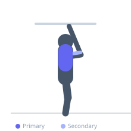

Exercise guide / Underhand Lat Pulldown with Lean Back
Underhand Lat Pulldown with Lean Back
The underhand lat pulldown with an intentional lean-back combines a supinated grip (mimicking a chin-up) with a slight torso lean of 20-30 degrees, shifting the bar's target from the clavicle to the lower sternum and increasing lower lat activation. The lean also allows slightly more weight to be used than a strict upright supinated pulldown, making it effective for progressive overload on lat thickness.
Primary muscles
latissimus dorsi
Secondary muscles
biceps brachii
trapezius lower
Stabilizers
erector spinae
Equipment
Cable Machine (High Pulley)


Starting position
- Sit at a lat pulldown machine with a close to shoulder-width underhand (supinated) grip. Set the thigh pad to secure the legs. Lean the torso back 20-30 degrees.
Setup
- Maintain the same lean angle throughout the set. The lean is a fixed position, not a dynamic movement.
Steps
- Step 1: Begin seated with arms extended, leaning back 20-30 degrees, supinated grip.
- Step 2: Depress and retract the shoulder blades.
- Step 3: Pull the bar to the lower chest/sternum.
- Step 4: Hold 1 second at peak contraction.
- Step 5: Return under control to full arm extension.
Coaching cues
- Lean is fixed — the torso does not move during the set
- Lead with the chest toward the bar
- Squeeze the elbows to the sides
Breathing
- Exhale on the pull. Inhale on the return.
Range of motion
- Full arm extension to bar at lower sternum.
Tempo
- 2-1-2-0
Common mistakes
- Leaning back too far — 20-30 degrees is sufficient; more becomes a row
- Pulling to the chest instead of the sternum — the lean makes the sternum the natural target
Safety
- Excessive lean places stress on the lower back — keep it moderate
- Ensure the thigh pad is tight to prevent pulling the body up
Training
- hypertrophy: 8–15 reps
- hypertrophy: 3–4 sets
- Rest: {'hypertrophy': 90}